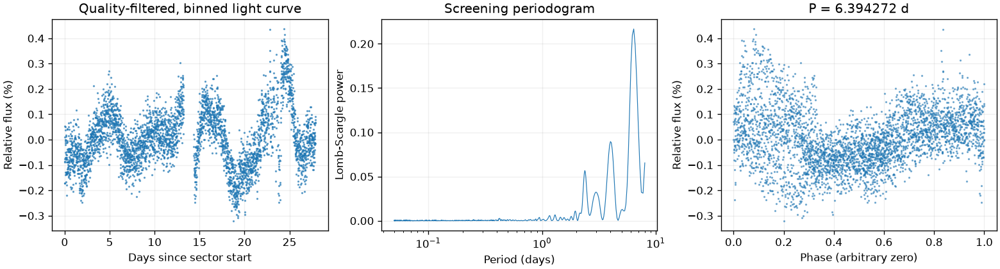
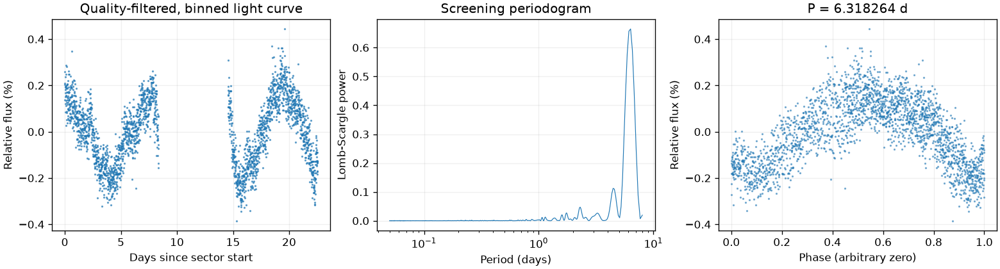
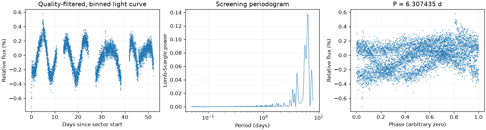

Sector 1 · LS 6.394272 天
BLS 辅助周期：6.143698 天
两种搜索周期不同，尚未自动决定采用哪一个。
前半段 LS：7.437448 天；后半段 LS：8.000000 天。
相对幅度估计 0.1470% · 有效点数 18278

Screening peak only; no correlated-noise false-alarm calibration or physical classification.
这是筛选报告，未确认新发现，也不能代替 VSX 提交材料。
图中依次为亮度随时间变化、候选周期强度和折叠后的重复形状。相位零点仅供展示；纵轴是相对通量，不是标定星等。
BLS 辅助周期：6.143698 天
两种搜索周期不同，尚未自动决定采用哪一个。
前半段 LS：7.437448 天；后半段 LS：8.000000 天。
相对幅度估计 0.1470% · 有效点数 18278

Screening peak only; no correlated-noise false-alarm calibration or physical classification.
BLS 辅助周期：6.385397 天
两种搜索周期不同，尚未自动决定采用哪一个。
前半段 LS：7.144012 天；后半段 LS：6.399904 天。
相对幅度估计 0.3271% · 有效点数 11701

Screening peak only; no correlated-noise false-alarm calibration or physical classification.
BLS 辅助周期：6.411386 天
两种搜索周期不同，尚未自动决定采用哪一个。
前半段 LS：6.019332 天；后半段 LS：8.000000 天。
相对幅度估计 0.2276% · 有效点数 29755

Screening peak only; no correlated-noise false-alarm calibration or physical classification.
{
"ra_deg": 70.2156617527899,
"dec_deg": -68.0139354012757,
"catalog_queries": [
{
"source": "VSX",
"checked_at": "2026-11-10T08:33:50.630520+00:00",
"url": "https://vsx.aavso.org/index.php",
"query": {
"params": {
"view": "api.list",
"ra": 70.2156617527899,
"dec": -68.0139354012757,
"radius": 0.04,
"format": "json"
}
},
"status": "completed",
"match_count": 2,
"note": "VSX neighborhood only; no-match is not novelty confirmation."
},
{
"source": "SIMBAD/VizieR/ADS",
"status": "not_run",
"note": "Requires detailed catalog/literature review; VSX alone is insufficient."
}
],
"vsx_neighbors": [
{
"Name": "Gaia DR3 4656380826804443392",
"RA2000": "70.18554",
"Declination2000": "-67.98251",
"ProperMotionRA": "8.9390",
"ProperMotionDec": "16.2730",
"VariabilityType": "ROT",
"MaxMag": "15.22 G",
"MinMag": "15.26 G",
"SpectralType": "K",
"Discoverer": "Gaia collaboration",
"Category": "Variable",
"OID": "3025289",
"Constellation": "Dor",
"sep_arcsec": 120.20440633680766
},
{
"Name": "Gaia DR3 4656380620640532864",
"RA2000": "70.21566",
"Declination2000": "-68.01394",
"ProperMotionRA": "14.4190",
"ProperMotionDec": "76.8110",
"VariabilityType": "ROT",
"MaxMag": "10.97 G",
"MinMag": "11.00 G",
"SpectralType": "G",
"Discoverer": "Gaia collaboration",
"Category": "Variable",
"OID": "3025538",
"Constellation": "Dor",
"sep_arcsec": 0.016723105711383638
}
],
"notes": [],
"errors": [],
"repeatability": {
"status": "approximately_repeated",
"fractional_spread": 0.013743761013775797,
"tolerance": 0.05,
"note": "Heuristic screening comparison, not period-error or long-term phase-coherence validation."
},
"localization": null,
"submission": {
"name": null,
"ra_deg": null,
"dec_deg": null,
"coordinate_source": null,
"coordinate_epoch": null,
"variability_type": null,
"period_days": null,
"period_error_days": null,
"epoch": null,
"epoch_time_standard": null,
"epoch_event": null,
"max_magnitude": null,
"min_magnitude": null,
"passband": null,
"magnitude_source": null,
"mean_magnitude": null,
"amplitude_magnitude": null,
"amplitude_passband": null,
"discoverers": null,
"references": null
}
}